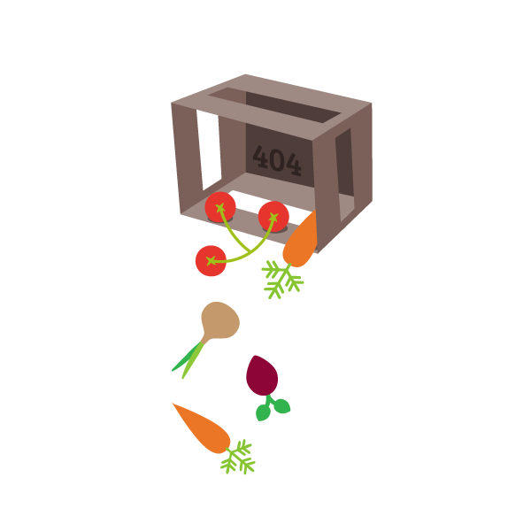

<link rel="import" href="../../../bower_components/polymer/polymer.html">
<link rel="import" href="../../layouts/up-down-layout.html">

<dom-module id="not-found-page">
  <style>
    :host {
      display: block;
      background: #fefefe url(Golden_Gate.png)center top fixed;
      height: calc(100%-64px);
      width: 100%;
    }

    .content {
      height: 100%;
      -webkit-background-size: cover;
      -moz-background-size: cover;
      -o-background-size: cover;
      background-size: cover;
      color: #2E2F30;
      font-family: "Montserrat", sans-serif;
      margin: 0;
    }

    .dialog {
      float: right;
      text-align: left;
      width: 45%;
      margin: 5% auto 0;
    }

    .image {
      float: left;
      max-width: 500px;
      margin: 5% 0 0 5%;
    }

    h1 {
      font-size: 5em;
      color: #393939;
      line-height: 1.5em;
    }

    p {
      font-size: 1.4em;
      color: #393939;
      padding-right: 5%;
    }
  </style>
  <template>
    <up-down-layout>
      <div class="content">
        <div>
          <div class="dialog">
            <h1>Whoops!</h1>
            <p>Clumsy us, we were unable to find the page you were looking for</p>
          </div>
          
        </div>
      </div>
    </up-down-layout>
  </template>
  <script>
    (function() {
      Polymer({
        is: 'not-found-page',
      });
    })();
  </script>
</dom-module>
